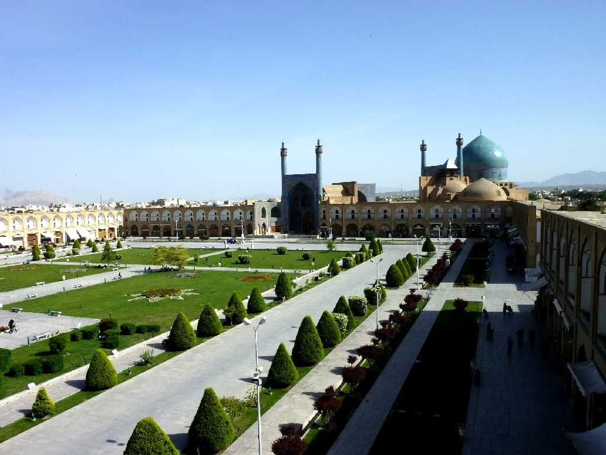
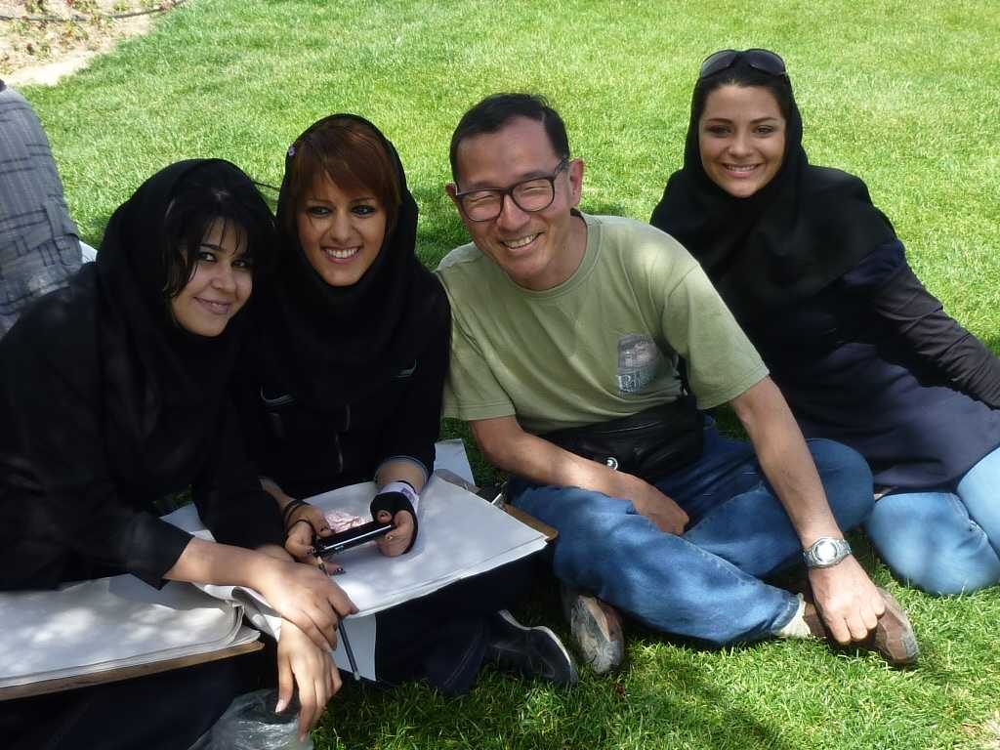
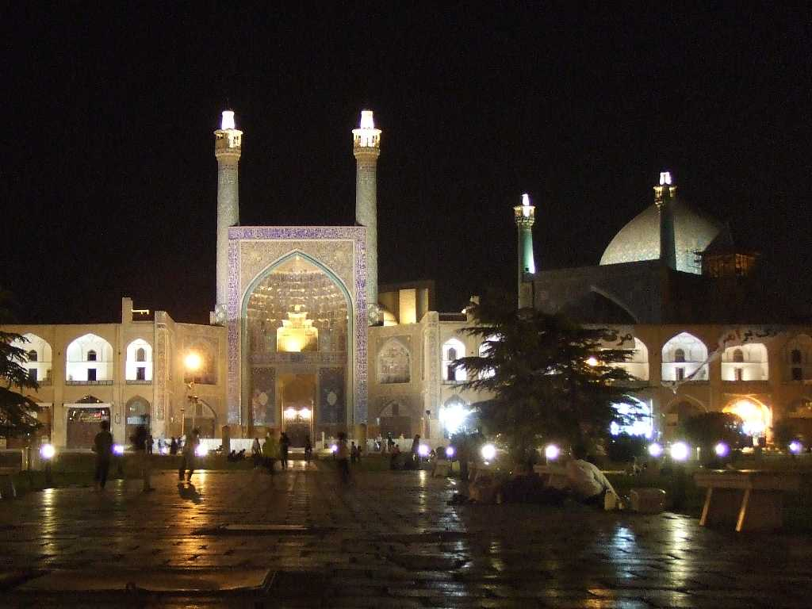

Imam Square from Ali Qapu Palace Isfahan
イランの顔イスファハンのイマム広場 精密なアラベスク模様の青いタイルで覆われた荘厳なイマムモスクとアリカプ宮殿や王族のモスクによって囲まれていることからかつては「ここには世界の半分がある」とも言われた

April 11 2010 Imam Square in Isfahan

Night View Imam Square
AI解説